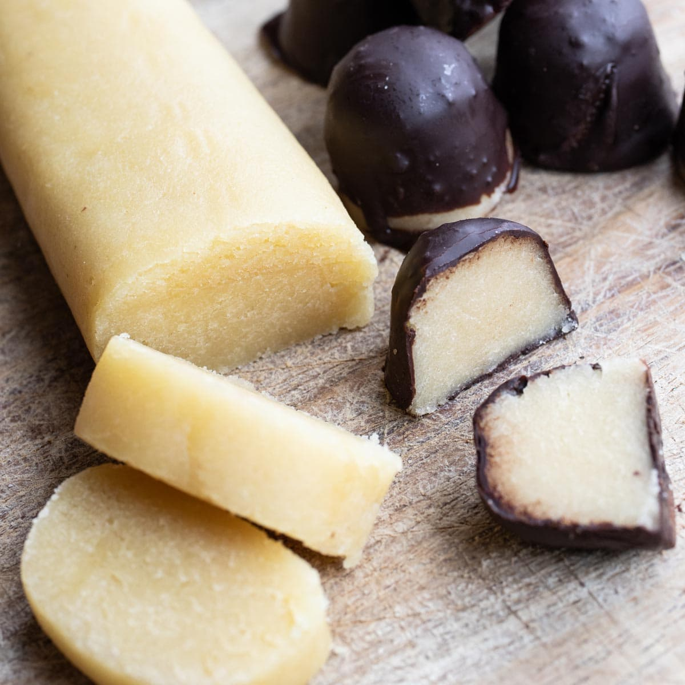

Marzipan

Description
Marzipan potatoes are a classic Christmastime treat in Germany, called Marzipankartoffeln. They are easy to make from homemade marzipan and are gluten free. Marzipan potatoes should be stored in an airtight container and will keep in a cool place for a month.
Ingredients
- 4 cups whole almonds
- 4 cups confectioners sugar
- 3 tablespoons rose water
- 3 drops almond extract
- 2 tablespoons unsweetened cocoa powder
Steps
- Place almonds in a heat-proof bowl and cover with boiling water. Let stand for a few minutes until cool enough to handle. Slip the almonds out of their skins one by one, leaving the remaining almonds in the warm water. Drain almonds in a colander and pat dry with paper towels.
- Place almonds, confectioners' sugar, rose water, and almond extract in a food processor fitted with a metal blade and process to a paste. Scrape the sides a few times to ensure even processing. Process marzipan until it is smooth and no longer grainy. Wrap in plastic wrap and store marzipan in a cool, dry place, 8 hours to overnight.
- Shape marzipan into a 1/2-inch thick roll. Cut into 1/2-inch pieces and roll each piece into a ball. Dredge balls in cocoa.
Back to the list of recipes